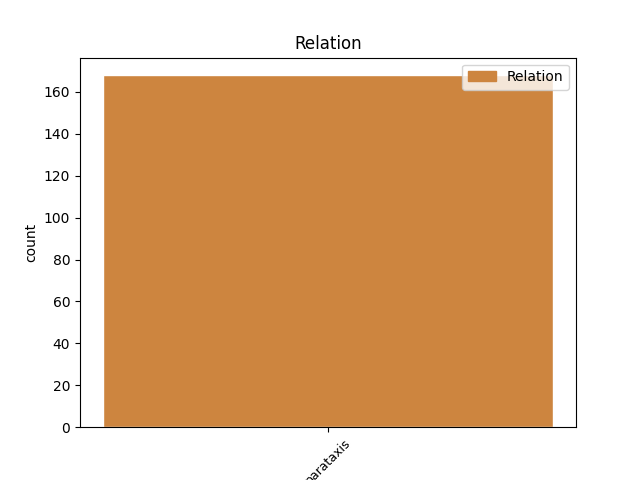
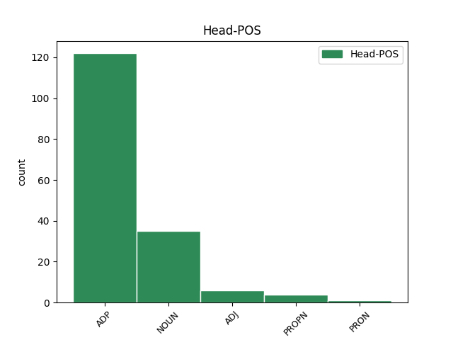
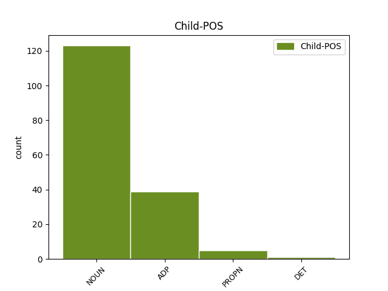

Distribution of features within this leaf



Agreement Rules sorted by frequency.
- When the dependent token is the parataxis(parataxis) of the head token, and the dependent token is ADP.
1 Sprovođenjem _ _ _ _ 0 _ _ _
2 Bukureške _ _ _ _ 0 _ _ _
3 konvencije _ _ _ _ 0 _ _ _
4 , _ _ _ _ 0 _ _ _
5 kao _ _ _ _ 0 _ _ _
6 i _ _ _ _ 0 _ _ _
7 trima _ _ _ _ 0 _ _ _
8 posebnim _ _ _ _ 0 _ _ _
9 protokolima _ _ _ _ 0 _ _ _
10 o _ _ _ _ 0 _ _ _
11 kontroli _ _ _ _ 0 _ _ _
12 zagađenja _ _ _ _ 0 _ _ _
13 sa _ _ _ _ 0 _ _ _
14 kopna _ _ _ _ 0 _ _ _
15 , _ _ _ _ 0 _ _ _
16 bacanju _ _ _ _ 0 _ _ _
17 otpada _ _ _ _ 0 _ _ _
18 i _ _ _ _ 0 _ _ _
19 zajedničkom _ _ _ _ 0 _ _ _
20 delovanju _ _ _ _ 0 _ _ _
21 u _ _ _ _ 0 _ _ _
22 slučaju _ _ _ _ 0 _ _ _
23 nesreća nesreća NOUN Ncfpg Case=Gen|Gender=Fem|Number=Plur 0 _ _ _
24 ( _ _ _ _ 0 _ _ _
25 poput poput ADP Sg Case=Gen 23 parataxis _ _
26 izlivanja _ _ _ _ 0 _ _ _
27 nafte _ _ _ _ 0 _ _ _
28 ) _ _ _ _ 0 _ _ _
29 koordinira _ _ _ _ 0 _ _ _
30 Crnomorska _ _ _ _ 0 _ _ _
31 komisija _ _ _ _ 0 _ _ _
32 , _ _ _ _ 0 _ _ _
33 čiji _ _ _ _ 0 _ _ _
34 sekretarijat _ _ _ _ 0 _ _ _
35 ima _ _ _ _ 0 _ _ _
36 sedište _ _ _ _ 0 _ _ _
37 u _ _ _ _ 0 _ _ _
38 Istanbulu _ _ _ _ 0 _ _ _
39 . _ _ _ _ 0 _ _ _
1 Mario Mario PROPN Npmsn Case=Nom|Gender=Masc|Number=Sing 0 _ _ _
2 Vargas _ _ _ _ 0 _ _ _
3 Ljosa _ _ _ _ 0 _ _ _
4 : _ _ _ _ 0 _ _ _
5 Diskretni _ _ _ _ 0 _ _ _
6 heroj heroj NOUN Ncmsn Case=Nom|Gender=Masc|Number=Sing 1 parataxis _ _
1 Evropska _ _ _ _ 0 _ _ _
2 komisija komisija NOUN Ncfsn Case=Nom|Gender=Fem|Number=Sing 0 _ _ _
3 ( _ _ _ _ 0 _ _ _
4 EK EK PROPN Npfsn Case=Nom|Gender=Fem|Number=Sing 2 parataxis _ SpaceAfter=No
5 ) _ _ _ _ 0 _ _ _
6 preporučila _ _ _ _ 0 _ _ _
7 je _ _ _ _ 0 _ _ _
8 početkom _ _ _ _ 0 _ _ _
9 novembra _ _ _ _ 0 _ _ _
10 da _ _ _ _ 0 _ _ _
11 se _ _ _ _ 0 _ _ _
12 to _ _ _ _ 0 _ _ _
13 učini _ _ _ _ 0 _ _ _
14 , _ _ _ _ 0 _ _ _
15 ali _ _ _ _ 0 _ _ _
16 je _ _ _ _ 0 _ _ _
17 istovremeno _ _ _ _ 0 _ _ _
18 navela _ _ _ _ 0 _ _ _
19 neke _ _ _ _ 0 _ _ _
20 ključne _ _ _ _ 0 _ _ _
21 oblasti _ _ _ _ 0 _ _ _
22 kojima _ _ _ _ 0 _ _ _
23 je _ _ _ _ 0 _ _ _
24 potrebno _ _ _ _ 0 _ _ _
25 posvetiti _ _ _ _ 0 _ _ _
26 pažnju _ _ _ _ 0 _ _ _
27 na _ _ _ _ 0 _ _ _
28 putu _ _ _ _ 0 _ _ _
29 ka _ _ _ _ 0 _ _ _
30 punopravnom _ _ _ _ 0 _ _ _
31 članstvu _ _ _ _ 0 _ _ _
32 u _ _ _ _ 0 _ _ _
33 EU _ _ _ _ 0 _ _ _
34 . _ _ _ _ 0 _ _ _
1 " _ _ _ _ 0 _ _ _
2 Svesni _ _ _ _ 0 _ _ _
3 smo _ _ _ _ 0 _ _ _
4 napora _ _ _ _ 0 _ _ _
5 koje _ _ _ _ 0 _ _ _
6 je _ _ _ _ 0 _ _ _
7 turska _ _ _ _ 0 _ _ _
8 vlada _ _ _ _ 0 _ _ _
9 uložila _ _ _ _ 0 _ _ _
10 da _ _ _ _ 0 _ _ _
11 bi _ _ _ _ 0 _ _ _
12 ojačala _ _ _ _ 0 _ _ _
13 BiH _ _ _ _ 0 _ _ _
14 na _ _ _ _ 0 _ _ _
15 putu _ _ _ _ 0 _ _ _
16 evroatlantske _ _ _ _ 0 _ _ _
17 integracije _ _ _ _ 0 _ _ _
18 , _ _ _ _ 0 _ _ _
19 a _ _ _ _ 0 _ _ _
20 tu _ _ _ _ 0 _ _ _
21 smatramo _ _ _ _ 0 _ _ _
22 da _ _ _ _ 0 _ _ _
23 je _ _ _ _ 0 _ _ _
24 svaka _ _ _ _ 0 _ _ _
25 pomoć pomoć NOUN Ncfsn Case=Nom|Gender=Fem|Number=Sing 0 _ _ _
26 , _ _ _ _ 0 _ _ _
27 posebno _ _ _ _ 0 _ _ _
28 ta taj DET Pd-fsn Case=Nom|Gender=Fem|Number=Sing|PronType=Dem 25 parataxis _ _
29 koju _ _ _ _ 0 _ _ _
30 nude _ _ _ _ 0 _ _ _
31 prijateljske _ _ _ _ 0 _ _ _
32 zemlje _ _ _ _ 0 _ _ _
33 , _ _ _ _ 0 _ _ _
34 dobrodošla _ _ _ _ 0 _ _ _
35 " _ _ _ _ 0 _ _ _
36 , _ _ _ _ 0 _ _ _
37 navodi _ _ _ _ 0 _ _ _
38 se _ _ _ _ 0 _ _ _
39 u _ _ _ _ 0 _ _ _
40 saopštenju _ _ _ _ 0 _ _ _
41 . _ _ _ _ 0 _ _ _
Disagree Examples:
1 Član _ _ _ _ 0 _ _ _
2 Predsedništva _ _ _ _ 0 _ _ _
3 Bosne _ _ _ _ 0 _ _ _
4 i _ _ _ _ 0 _ _ _
5 Hercegovine _ _ _ _ 0 _ _ _
6 ( _ _ _ _ 0 _ _ _
7 BiH _ _ _ _ 0 _ _ _
8 ) _ _ _ _ 0 _ _ _
9 Željko _ _ _ _ 0 _ _ _
10 Komšić _ _ _ _ 0 _ _ _
11 podneo _ _ _ _ 0 _ _ _
12 je _ _ _ _ 0 _ _ _
13 u u ADP Sa Case=Acc 0 _ _ _
14 utorak _ _ _ _ 0 _ _ _
15 ( _ _ _ _ 0 _ _ _
16 20. _ _ _ _ 0 _ _ _
17 marta mart NOUN Ncmsg Case=Gen|Gender=Masc|Number=Sing 13 parataxis _ SpaceAfter=No
18 ) _ _ _ _ 0 _ _ _
19 ostavku _ _ _ _ 0 _ _ _
20 na _ _ _ _ 0 _ _ _
21 mesto _ _ _ _ 0 _ _ _
22 potpredsednika _ _ _ _ 0 _ _ _
23 Socijaldemokratske _ _ _ _ 0 _ _ _
24 partije _ _ _ _ 0 _ _ _
25 ( _ _ _ _ 0 _ _ _
26 SDP _ _ _ _ 0 _ _ _
27 ) _ _ _ _ 0 _ _ _
28 i _ _ _ _ 0 _ _ _
29 dugogodišnjeg _ _ _ _ 0 _ _ _
30 člana _ _ _ _ 0 _ _ _
31 najvišeg _ _ _ _ 0 _ _ _
32 rukovodstva _ _ _ _ 0 _ _ _
33 stranke _ _ _ _ 0 _ _ _
34 . _ _ _ _ 0 _ _ _
1 Iz _ _ _ _ 0 _ _ _
2 Člana _ _ _ _ 0 _ _ _
3 17 _ _ _ _ 0 _ _ _
4 izbačen _ _ _ _ 0 _ _ _
5 je _ _ _ _ 0 _ _ _
6 pasus _ _ _ _ 0 _ _ _
7 u _ _ _ _ 0 _ _ _
8 kojem _ _ _ _ 0 _ _ _
9 se _ _ _ _ 0 _ _ _
10 pominje _ _ _ _ 0 _ _ _
11 smrtna _ _ _ _ 0 _ _ _
12 kazna _ _ _ _ 0 _ _ _
13 , _ _ _ _ 0 _ _ _
14 kao _ _ _ _ 0 _ _ _
15 i _ _ _ _ 0 _ _ _
16 rečenica rečenica NOUN Ncfsn Case=Nom|Gender=Fem|Number=Sing 0 _ _ _
17 " _ _ _ _ 0 _ _ _
18 tokom tokom ADP Sg Case=Gen 16 parataxis _ _
19 implementacije _ _ _ _ 0 _ _ _
20 direktiva _ _ _ _ 0 _ _ _
21 izvršnih _ _ _ _ 0 _ _ _
22 vlasti _ _ _ _ 0 _ _ _
23 u _ _ _ _ 0 _ _ _
24 vreme _ _ _ _ 0 _ _ _
25 vanrednog _ _ _ _ 0 _ _ _
26 stanja _ _ _ _ 0 _ _ _
27 " _ _ _ _ 0 _ _ _
28 . _ _ _ _ 0 _ _ _
1 Američki _ _ _ _ 0 _ _ _
2 predsednik _ _ _ _ 0 _ _ _
3 Džordž _ _ _ _ 0 _ _ _
4 V. _ _ _ _ 0 _ _ _
5 Buš _ _ _ _ 0 _ _ _
6 ( _ _ _ _ 0 _ _ _
7 levo _ _ _ _ 0 _ _ _
8 ) _ _ _ _ 0 _ _ _
9 govori _ _ _ _ 0 _ _ _
10 sa _ _ _ _ 0 _ _ _
11 makedonskim _ _ _ _ 0 _ _ _
12 predsednikom predsednik NOUN Ncmsi Case=Ins|Gender=Masc|Number=Sing 0 _ _ _
13 Brankom _ _ _ _ 0 _ _ _
14 Crvenkovskim _ _ _ _ 0 _ _ _
15 ( _ _ _ _ 0 _ _ _
16 u u ADP Sl Case=Loc 12 parataxis _ _
17 sredini _ _ _ _ 0 _ _ _
18 ) _ _ _ _ 0 _ _ _
19 i _ _ _ _ 0 _ _ _
20 premijerom _ _ _ _ 0 _ _ _
21 Nikolom _ _ _ _ 0 _ _ _
22 Gruevskim _ _ _ _ 0 _ _ _
23 na _ _ _ _ 0 _ _ _
24 samitu _ _ _ _ 0 _ _ _
25 NATO _ _ _ _ 0 _ _ _
26 u _ _ _ _ 0 _ _ _
27 Bukureštu _ _ _ _ 0 _ _ _
28 prošlog _ _ _ _ 0 _ _ _
29 meseca _ _ _ _ 0 _ _ _
30 . _ _ _ _ 0 _ _ _
1 Aktivisti _ _ _ _ 0 _ _ _
2 protestuju _ _ _ _ 0 _ _ _
3 zbog _ _ _ _ 0 _ _ _
4 zabrane _ _ _ _ 0 _ _ _
5 grčkih _ _ _ _ 0 _ _ _
6 vlasti _ _ _ _ 0 _ _ _
7 brodovima _ _ _ _ 0 _ _ _
8 na _ _ _ _ 0 _ _ _
9 putu _ _ _ _ 0 _ _ _
10 za _ _ _ _ 0 _ _ _
11 Gazu _ _ _ _ 0 _ _ _
12 , _ _ _ _ 0 _ _ _
13 u u ADP Sa Case=Acc 0 _ _ _
14 subotu _ _ _ _ 0 _ _ _
15 ( _ _ _ _ 0 _ _ _
16 2. _ _ _ _ 0 _ _ _
17 jula jul NOUN Ncmsg Case=Gen|Gender=Masc|Number=Sing 13 parataxis _ SpaceAfter=No
18 ) _ _ _ _ 0 _ _ _
19 na _ _ _ _ 0 _ _ _
20 ostrvu _ _ _ _ 0 _ _ _
21 Krf _ _ _ _ 0 _ _ _
22 . _ _ _ _ 0 _ _ _
1 Misija _ _ _ _ 0 _ _ _
2 aktivista _ _ _ _ 0 _ _ _
3 koji _ _ _ _ 0 _ _ _
4 su _ _ _ _ 0 _ _ _
5 planirali _ _ _ _ 0 _ _ _
6 da _ _ _ _ 0 _ _ _
7 prevezu _ _ _ _ 0 _ _ _
8 pomoć _ _ _ _ 0 _ _ _
9 u _ _ _ _ 0 _ _ _
10 Pojas _ _ _ _ 0 _ _ _
11 Gaze _ _ _ _ 0 _ _ _
12 suočila _ _ _ _ 0 _ _ _
13 se _ _ _ _ 0 _ _ _
14 u u ADP Sa Case=Acc 0 _ _ _
15 subotu _ _ _ _ 0 _ _ _
16 ( _ _ _ _ 0 _ _ _
17 2. _ _ _ _ 0 _ _ _
18 jula jul NOUN Ncmsg Case=Gen|Gender=Masc|Number=Sing 14 parataxis _ SpaceAfter=No
19 ) _ _ _ _ 0 _ _ _
20 sa _ _ _ _ 0 _ _ _
21 velikim _ _ _ _ 0 _ _ _
22 korakom _ _ _ _ 0 _ _ _
23 nazad _ _ _ _ 0 _ _ _
24 , _ _ _ _ 0 _ _ _
25 jer _ _ _ _ 0 _ _ _
26 su _ _ _ _ 0 _ _ _
27 grčke _ _ _ _ 0 _ _ _
28 vlasti _ _ _ _ 0 _ _ _
29 zaustavile _ _ _ _ 0 _ _ _
30 njihov _ _ _ _ 0 _ _ _
31 konvoj _ _ _ _ 0 _ _ _
32 i _ _ _ _ 0 _ _ _
33 uhapsile _ _ _ _ 0 _ _ _
34 kapetana _ _ _ _ 0 _ _ _
35 jednog _ _ _ _ 0 _ _ _
36 od _ _ _ _ 0 _ _ _
37 brodova _ _ _ _ 0 _ _ _
38 koji _ _ _ _ 0 _ _ _
39 je _ _ _ _ 0 _ _ _
40 plovio _ _ _ _ 0 _ _ _
41 pod _ _ _ _ 0 _ _ _
42 američkom _ _ _ _ 0 _ _ _
43 zastavom _ _ _ _ 0 _ _ _
44 , _ _ _ _ 0 _ _ _
45 što _ _ _ _ 0 _ _ _
46 je _ _ _ _ 0 _ _ _
47 izazvalo _ _ _ _ 0 _ _ _
48 novu _ _ _ _ 0 _ _ _
49 kontroverzu _ _ _ _ 0 _ _ _
50 . _ _ _ _ 0 _ _ _